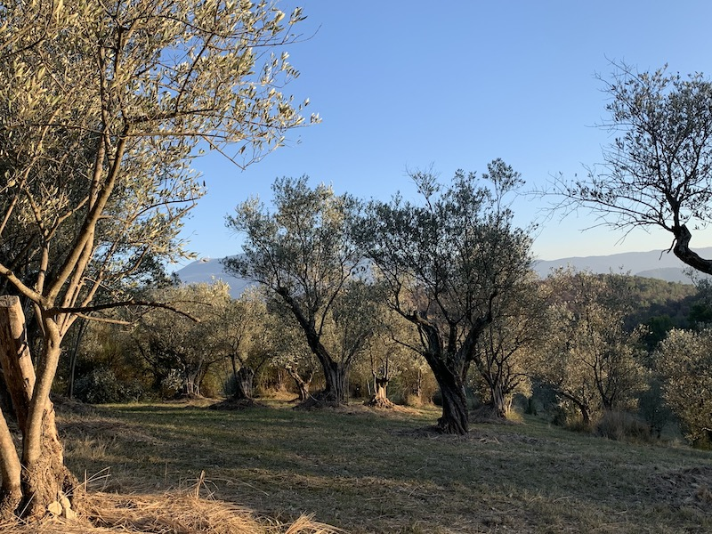

Les Saintes Fonts
Depuis plus d'une centaine d'années sont récoltées des olives de variété tanche sur ces parcelles distribuées dans une vallée en AOC Nyons.
Localisation
Les Saintes Fonts est un ensemble de parcelles réparties sur les communes de Saint-Romain-en-Viennois et Faucon en Nord-Vaucluse. L'AOC Nyons, fondée en 1994 s'étend sur le sud de la Drôme et le Nord du Vaucluse. (voir carte)
Histoire
Ces arbres ont été abandonnés lors du gel de 1956, puis remis en état au début des années 2000.
Tous les ans, nous récoltons les olives, et nous essayons de prendre quelques photos
- 2010: le haut des saintes
- 2011: pas de photos
- 2012: pas de photos
- 2013: pas de photos
- 2014: pas de photos
- 2015: récolte des acrobates
- 2016: pas de photos
- 2017: pas de photos
- 2018: récolte des belles doches
- 2019: pas de récolte
- 2020: cueillette allongée
Production
Les oliviers sont plus naturels que bio: aucun engrais, insecticide, ni autre produit phytosanitaire n'a jamais été utilisé. Cette méthode pose certains problèmes notamment concernant la mouche de l'olive, c'est pour cela que nous n'avons pas de récolte tous les ans.
Les sols sont enherbés, les ronces sont enlevées à la main, et une fois par an un voisin passe une faucheuse mécanisée dans une partie des terres.
Les oliviers sont taillés à la main, et depuis 2019 Élina utilise sa petite tronçonneuse, sinon c'est uniquement au sécateur.
Récolte
Les olives sont récoltées à la main, nous n'utilisons ni filets ni machines qui secouent les arbres.
La récolte est un moment convivial de fête et de piques-niques quand le temps le permet où famille et amis viennent donner main forte en échange d'huile d'olive.
Les fruits sont récoltés mûrs, quand les olives sont bien noires et un peu frippées, généralement c'est en décembre.
Presse
Les olives sont pressées chez M. Farnoux dans son nouveau moulin qui se trouve à Puyméras; il a fallu abandonner depuis peu l'ancien moulin qui se trouvait dans Mirabel ("il fallait bien se mettre aux normes" dit M. Farnoux).
L'huile est extraite de la première (et seule) pression, à froid.
Agréments et labels
Nous n'avons pas le label "Bio", parce que c'est compliqué les labels. Par contre, on est en AOC Olive noire de Nyons.